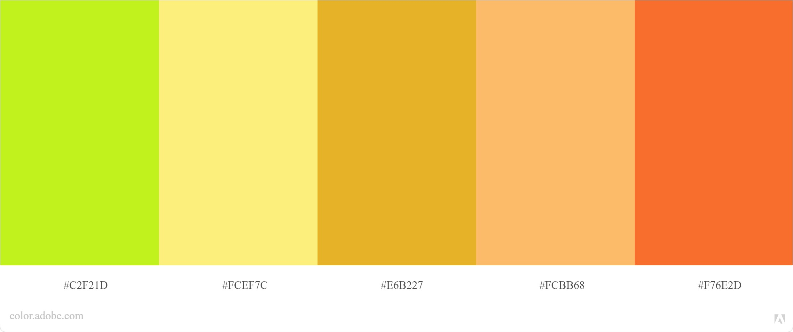

Plataforma de engajamento social
Omnifolio is a new, free and better way to understand your individuality,
find well-suited work and manage your own development.

Omnifolio é uma configuração de serviço online sem fins lucrativos para ajudar as
pessoas a entenderem mais sobre si mesmas e encontrarem um trabalho mais gratificante.
Responda a quatro questionários curtos (eles levam cerca de cinco minutos cada)
Receba feedback personalizado sobre suas características e preferências.
Compare seu perfil com outros tipos de usuário (por exemplo, como você se parece
com os autônomos?).
Compare-se com perfis de funções de trabalho.
Compartilhe seu perfil em particular com outros usuários ou exportar seus dados para uso em outro lugar.